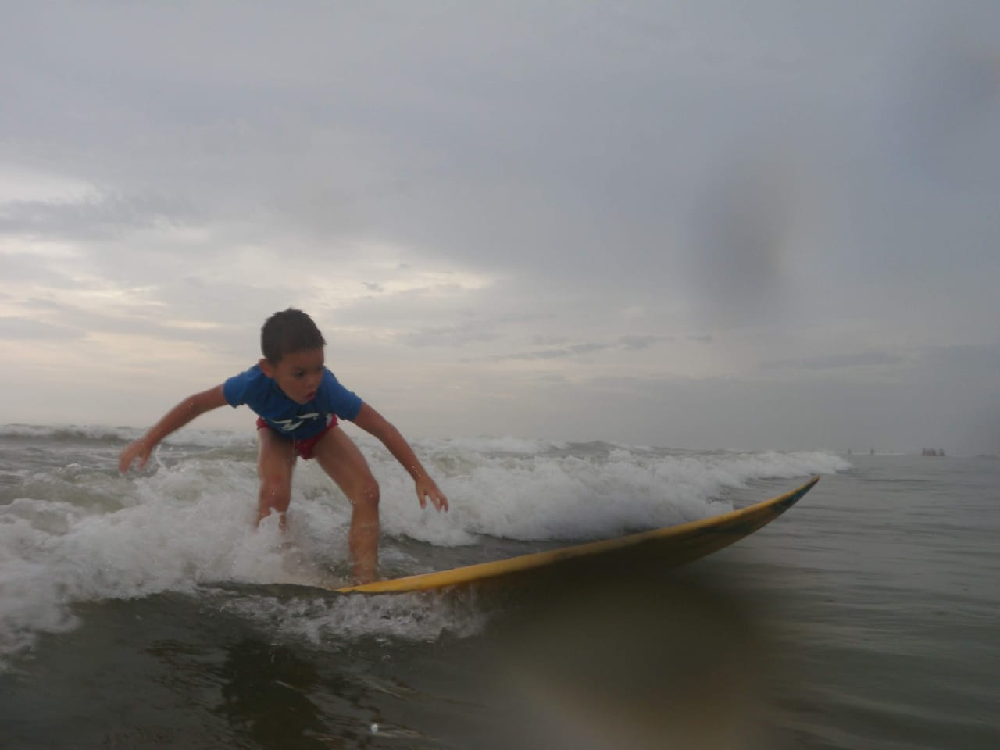
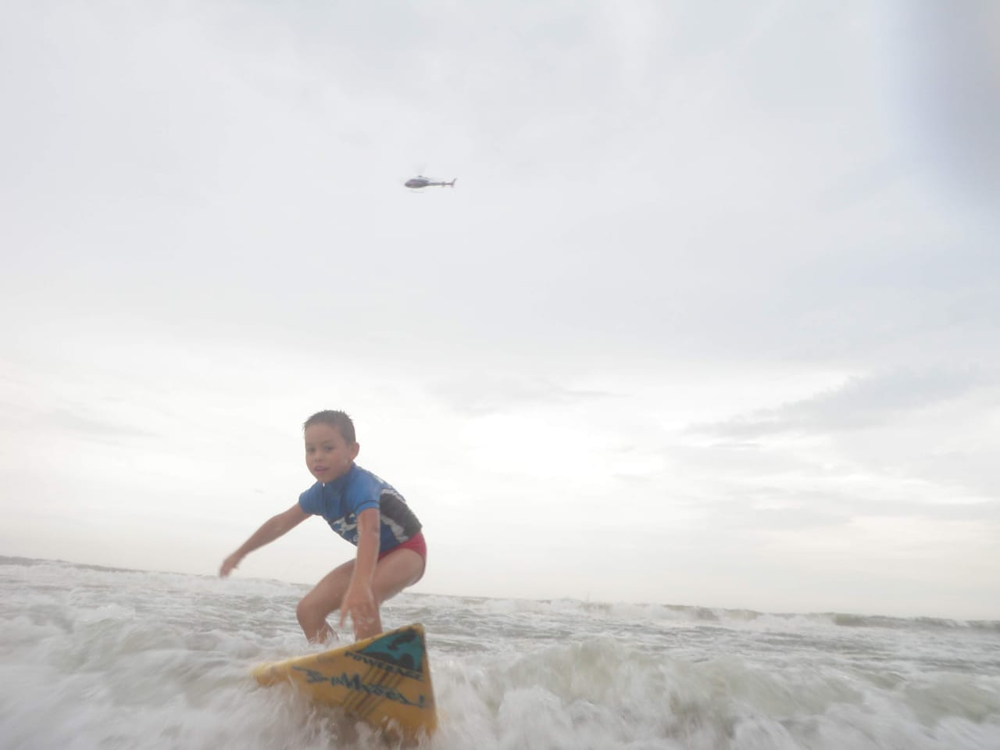

Meu nome é Leonardo
Tenho apenas 18 anos, estou cursando o curso de software para ter uma certa ideia do que irei fazer em minha faculdade, em este site irei colocar algumas coisas que eu gosto de fazer, e contar um pouco sobre talvez...
Primeiramente irei falar sobre futebol, que é um esporte que eu pratico desde meus 6 anos, ja pensei sim em ser um jogador de futebol, porém, no começo eu era perdido em saber qual caminho seguir para poder dar certo, ganhei alguns campeonatos, até mesmo a taça São Paulo que é um campeonato bem disputado! Depois que eu entrei no ensio médio acabei desistindo e procurando emprego de jovem aprendiz para ter uma certa renda para o meu futuro.


Outro esporte que eu praticava era o surf, eu surfava desde meus 6 anos mas ultimamente não tenho ido muito a praia para continuar surfando.
Essas são algumas imagens minha surfando quando era pequeno.
 Aqui irei deixar 2 jogos de infancia que eram de graça e de facil acesso para vocês acessarem caso tenha interesse, jogos que joguei bastante quando era criança.
Caso queiram ver mais sobre podem acessar meu instagram e se tiverem interesse faço live de vez em quando, mais para gravar minhas jogadas...: